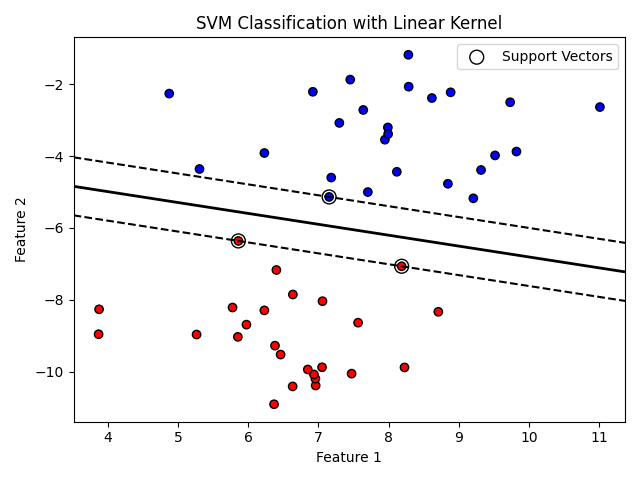

サポートベクターマシン（SVM）
サポートベクターマシン（SVM）は、主に分類問題に用いられる教師あり学習アルゴリズムです。特徴空間においてクラスを分割する超平面を求め、そのマージン（境界から各クラスまでの距離）を最大化することで汎化性能を高めます。
- 超平面: クラスを分ける境界線や境界面。
- マージン: 境界線から最も近いデータ点までの距離。広いほど新しいデータに強い。
- サポートベクトル: マージン上に位置し、境界面を決定づけるデータ点。
基本原理
SVMはデータ点からサポートベクトルと呼ばれる特徴的な点を選び、その点で定義される境界線を決定します。分類境界線は、クラス間のマージンを最大化するように選ばれ、サポートベクトル以外の点は境界線に影響を与えません。
カーネル法
線形分離できない場合でも、SVMはカーネル法を用いて入力空間を高次元の特徴空間に写像し、線形分類を実現します。
代表的なカーネル
- 線形カーネル: そのままの特徴で分類する。計算コストが低い。
- 多項式カーネル: 多項式の次数に基づく非線形特徴を導入する。
- RBF（ガウス）カーネル: 距離に応じた重み付けを行う滑らかなカーネル。多くの用途で広く使われる。
他にもシグモイドカーネルやカスタムカーネルなどがあり、データの性質に合わせて選択します。

線形 SVM とカーネル SVM の比較
| 種類 | 特徴 | 用途 |
|---|---|---|
| 線形SVM | 特徴空間が線形分離可能な場合に使用。計算が比較的軽い。 | テキスト分類など高次元・疎な特徴に適する。 |
| カーネルSVM | カーネル関数により非線形な分離境界を構成。 | 画像認識など複雑なパターンの識別。 |
SVM のメリットと注意点
- 高次元データでも効果的に分類できるため、テキストや画像の分類でよく用いられます。
- サポートベクトル以外の点に影響されないため、外れ値に対して比較的頑健です。
- 一方で、データ量が非常に多い場合やクラス間の分離が複雑な場合は計算コストが高くなることがあります。